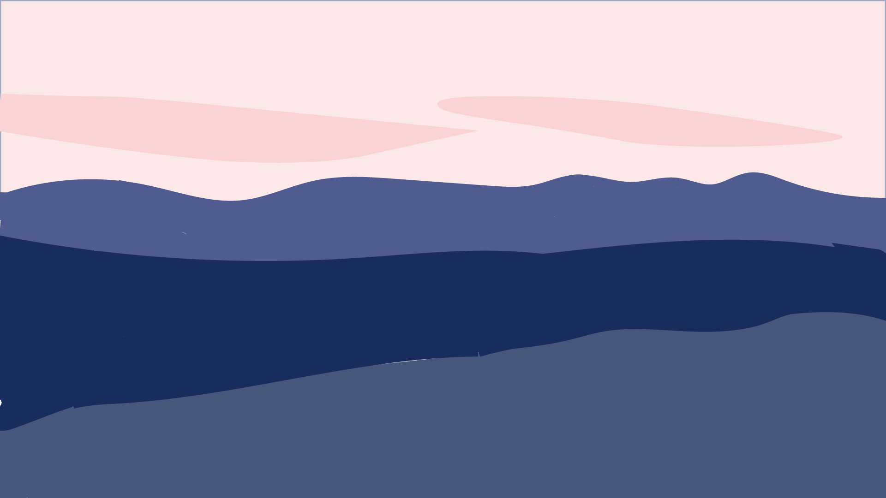
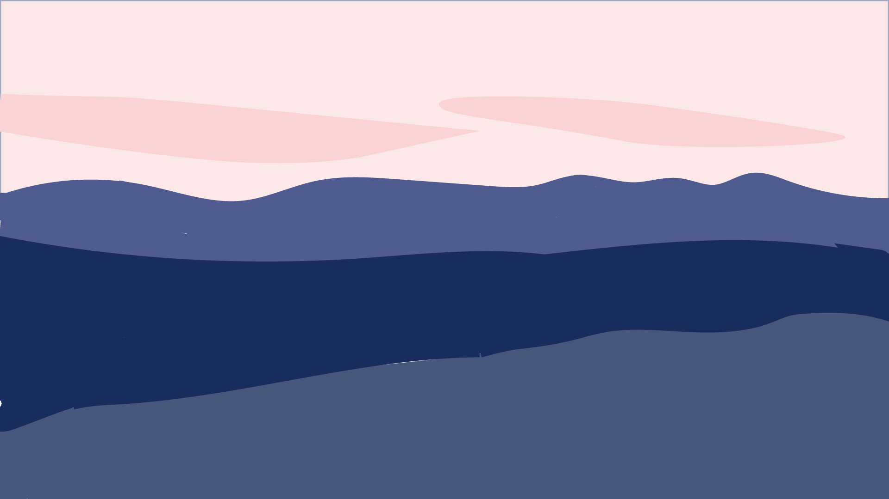

Lab 2 – Illustrated Environment
 

I chose this photograph because I really love the color scheme. It looks very soothing.
I selected three colors from the color wheel that closely match the photograph,
and combined them using brushes and the Ellipse/Rectangle tools.
To create a layered effect, I lowered the opacity.
← Back to In-Lab Assignments